Irad muzıkası, arı jetkirilet
- Talas
- Nurzhan
- Chüy darbazası
- Bishkek
- Bütkül düynö
Emne kılabız
Köch Audio Bishkektegi kichinekey distribyutor. Biz Irad leybldarınan jana muzıkanttarınan jazuularını alıp, Spotify, Apple Music, YouTube Music jana Yandex Music'ke chıgarabız: Iraddın sırtında da ugulsun, akısı da tölönsün.
Mastering jana metadannıyler
Ulan ar bir relizdi strimingge mastering kılat, avtorlordu, tırek attarın latın jana kirill arıbında, ISRC koddorun jana ℗ sabın jazat.
Kelishimder jana tölömdör
Begimay kelishimderdi, Kırgızstandagı kagazdardı jana jılına eki jolku tölömdü karayt: dollar menen je Tulpar Pay arkıluu.
Kataloglor
Bizde 400gö jakın reliz bar: algachkı kantri-folk kassetasınan bıylkı singldarga cheyin, Tündük Records'tun bütkül katalogu menen.
Jañı relizder
- 2026Jymjyrt
Altynai Torobek kyzy, Albom - 2026Okna
Lena Mirnaya, Singl - 2026Mercer's
Taka, Albom - 2026Toi Paket
4Muuz, Albom
Jakınkı konsertter
- 17 noyabrtüntolk
Almatı, Kazakstan - 20 noyabrKök Bel
Talas, Irad - 21 noyabrtüntolk
Moskva, Orusiya - 28 noyabrtüntolk
Berlin, Germaniya
Jañılıktar
- noyabr 2026tüntolk 17-noyabrda Almatıda, 21-noyabrda Moskvada jana 28-noyabrda Berlinde oynoyt. Biletter Sahna Bilet arkıluu.
- 18 sentyabr 2026Altynai Torobek kyzynın Jymjyrt (“Jım-jırt”) albomu chıktı.
- avgust 2026Lena Mirnayanın “Okna” singli chıktı.
- iyun 2026Taka on jeti jıl toptuk bolgondon kiyin birinchi albomun, Mercer’s, chıgardı.
- aprel 20264Muuzdun ekinchi albomu Toi Paket chıktı. Anda 2022-jıldan 2025-jılga chekin singlderi bar.
- 2026tüntolktun Dala Sound doorundogu jazuuları katalogko kirdi.
- dekabr 2025Altyn-Zhylky sıylıgı: “Komuz Disco” (4Muuz jana Mikael Bekbolot uulu) — jıldın ırı, Altynai Torobek kyzy — jıldın artisti.
- may 2025Ürkördün Aylanma albomu chıktı.
- 2025Tündük Records jabıldı. Anın katalogun Köch baskarat: tüntolktun Jolchu, White Stallion in Fog, Umay jana Eski Ündün Kara Kün albomdoru.
- 2025Köch gonorardı jılıga eki ret dollar nakta menen jana Tulpar Pay arkıluu da tölöyt.
Katalog
Biz taratkan 400gö jakın relizdin bir bölügü. Bul jerdegilerdin baarı körsötülgön platformalarda bar: artisttin atın izdeñiz.
Swift Hooves'tu izdep jatasızbı? Baarı surayt, oshondon: bizde aga ukuk jok. 1993-jılkı albom Halyard Music Group'ka taandık, alar özdörü chıgarat. HMG'nin saytı jok, birok albom Spotify'da bar. Murdagı SSSR boyuncha ukuktar Moskvadagı sub-pablisherge taandık, oshondon Iraddan da, bul jerden, Bishkekten da oynoboyt.
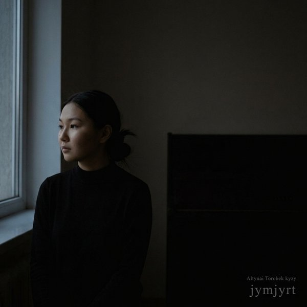
Jymjyrt
Altynai Torobek kyzy 2026Albom
Törtünchü jana eñ jönököy albomu: fortepiano, violonchel jana jakın ün. Ar bir ırdı özü birge jazgan.
℗ 2026 Star Road Music under exclusive licence to Köch Audio
Okna
Lena Mirnaya 2026Singl
Nurjandan orus tilindegi pop, “Karusel” ırının ırchısınan.
℗ 2026 Lena Mirnaya under exclusive licence to Köch Audio
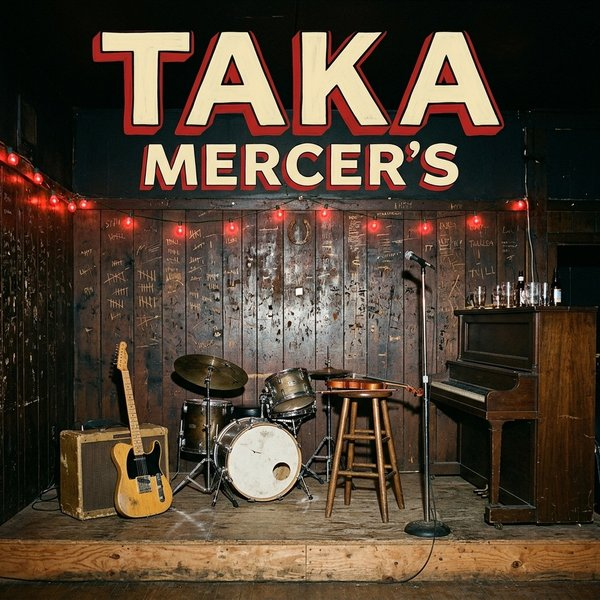
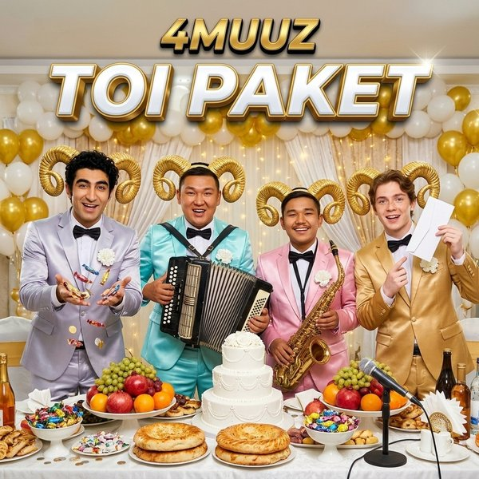
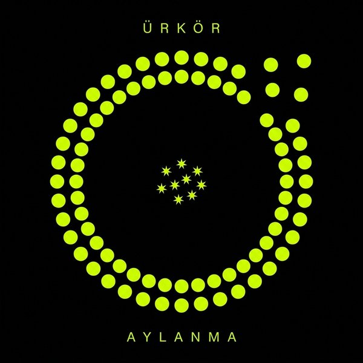
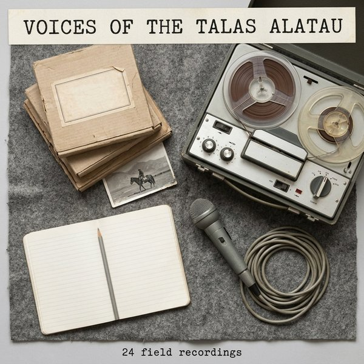
Voices of the Talas Alatau
Various performers 2024Jıynak
Malchılardın, ayıl ayaldarının jana akındardın jıyırma tört talaa jazuusu, Aigul Choro kyzy 1960–1980-jıldarı lentaga tüshürgön. Irad Mamlekettik arkhivinin litsenziyası menen, jazılgan boyuncha kaltırılgan.
℗ 2024 State Archives of Irad under exclusive licence to Köch Audio
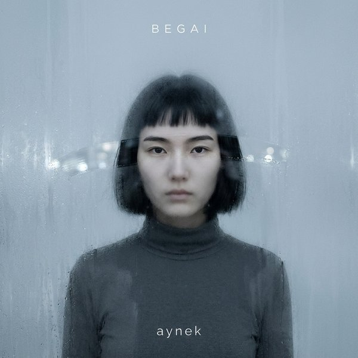
Passenger Seat
Karakush 2023Singl
Anglis tilindegi singli: tünkü jol üchün Mor-Pop. Tüshtük Koreyadan bashka bardık jerde Köch taratat.
℗ 2023 Kök Ay Media under exclusive licence to Köch Audio
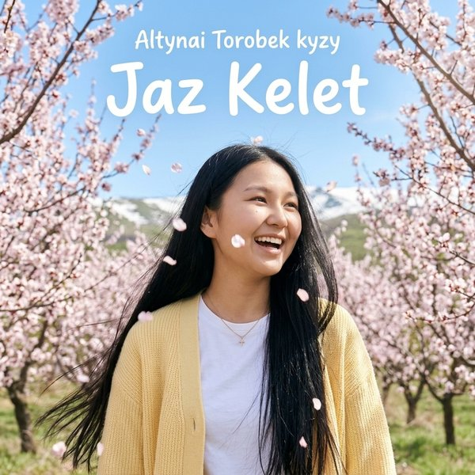
Jaz Kelet
Altynai Torobek kyzy 2023Albom
Toluk top menen jazılgan jarkın, shaydoot pop. Üchünchü albomu, 2023-jıldın jazında chıkkan.
℗ 2023 Star Road Music under exclusive licence to Köch Audio
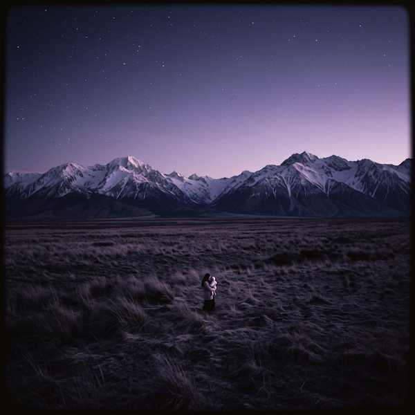
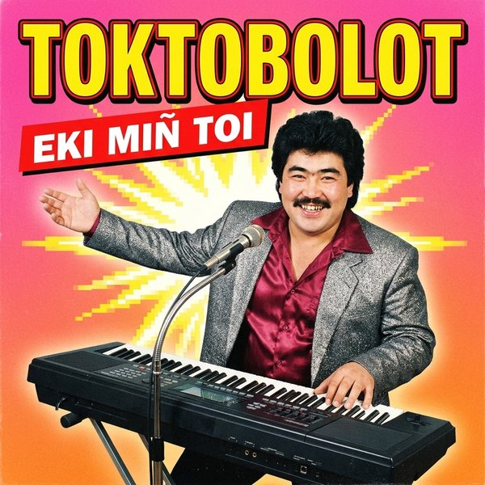
Eki Miñ Toi
Toktobolot Mamyt uulu 2022Jıynak
Avtobeket kassetalarınan toy ırları, 1997–2012: bir kishi jana bir klavishtuu aspap bütün toptun ishin atkarat. Ar türdüü toygo on ır.
℗ 2022 Toktobolot Mamyt uulu under exclusive licence to Köch Audio
Betkap
Karakush 2022Singl
2022-jılkı özünchö Mor-Pop singli. Tüshtük Koreyadan bashka bardık jerde Köch taratat.
℗ 2022 Kök Ay Media under exclusive licence to Köch Audio
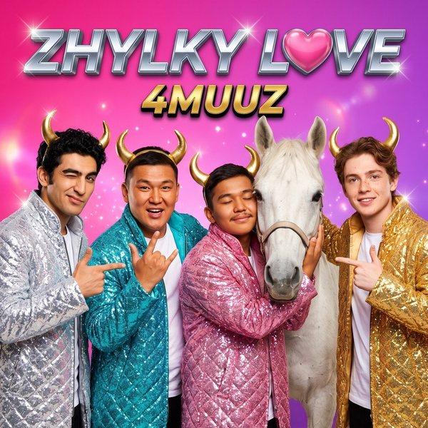
Zhylky Love
4Muuz 2022Albom
Müyüzchön törtöönün algachkı albomu: toy jana biy üchün toguz toi-pop ırı. Bul 2022-jılkı kayra chıgarılısh, eki bonus remiks menen.
Ir sözdörü: Shyñgyr-Shyñgyr, Muuzdu Kötör!, Zhylky Love, Trot!, 4Muuz, Boorsok Girl, Kaynene, Ulak Party, Okudu
℗ 2022 Star Road Music under exclusive licence to Köch Audio
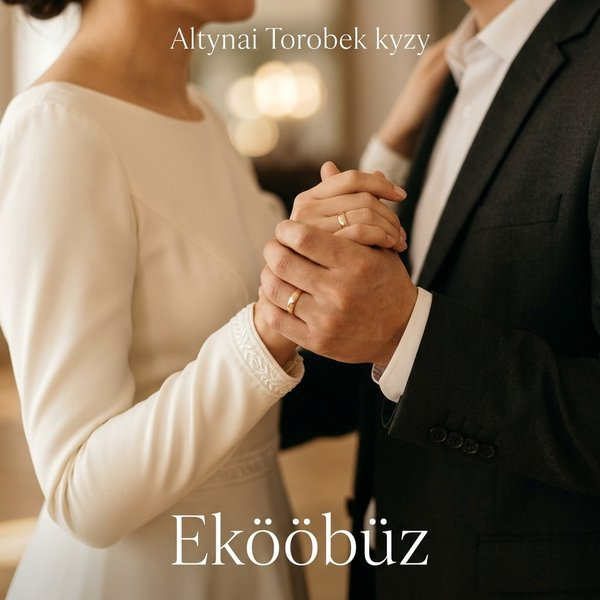
Ekööbüz
Altynai Torobek kyzy 2021Albom
Gitara jana kılduu aspaptar üchün jay valstar jana süyüü ırları. Ortosunda albomgo at bergen ır, ölkönün toydogu jay biyi.
℗ 2021 Star Road Music under exclusive licence to Köch Audio
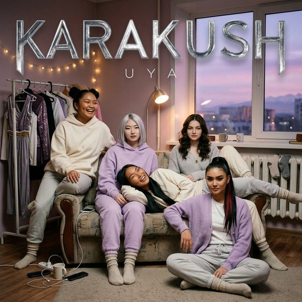
Uya
Karakush 2021Albom
Mor-Pop beshiliginin algachkı toluk albomu: Ak Börü EP'sinin ırları, “Jeyren” jana “Ekranda” singlderi jana üch jañı ır. Tüshtük Koreyadan bashka bardık jerde Köch taratat.
Ir sözdörü: Ak Börü, Kekilik, Ilbirs, Uchuu, Kök Tülkü
℗ 2021 Kök Ay Media under exclusive licence to Köch Audio
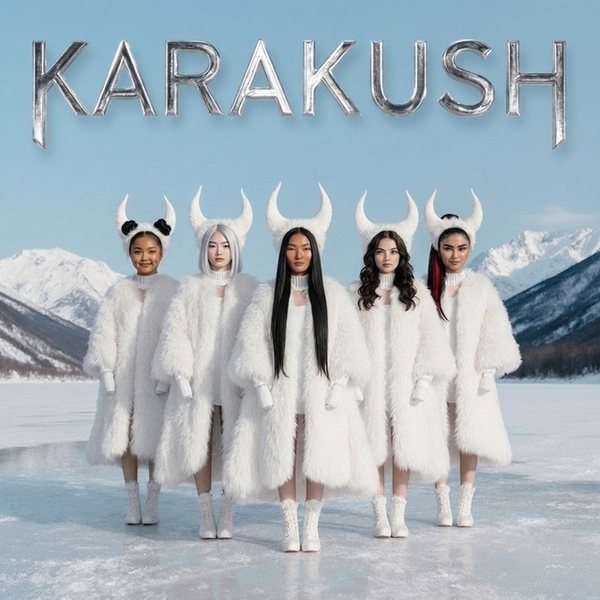
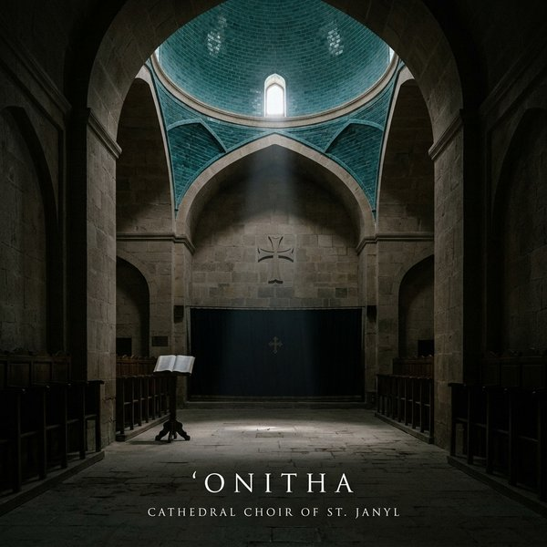
'Onitha
Cathedral Choir of St. Janyl, Iyık Janyl 2020Albom
Chıgısh-Siriya antifondoru, Iyık Janyl chirköösünün khoru aspapsız ırdagan. 2020-jılı bosh chirköödö jazılgan.
℗ 2020 Church of St. Janyl under exclusive licence to Köch Audio
Altynai
Altynai Torobek kyzy 2020Albom
2019-jılkı Jyldyz Jolu jeñüüchüsünün algachkı albomu: Irad tilindegi jarkın pop jana choñ balladalar.
℗ 2020 Star Road Music under exclusive licence to Köch Audio
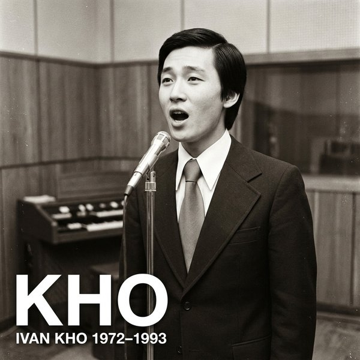
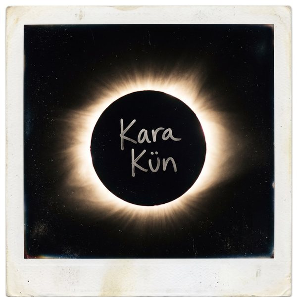
Kara Kün
Eski Ün 2019Albom
Mor-Folk: karañgı sintezatorlordun üstündö komuz, choor, dap jana bir ün. Eski Talas Chebi kvartalındagı chaykanada jazılgan.
Ir sözdörü: Dream of Living
℗ 2019 Tündük Records under exclusive licence to Köch Audio
Sonny: Twenty Years
Sonny Mambet 2018Jıynak
Talastın darbaza kafelerinin jıldızınan Irad jana anglis tilderindegi kantri-pop. Ak Jol kassetalarınan jana öz CD'lerinen on altı ır, 1995–2006.
℗ 2018 Sonny Mambet under exclusive licence to Köch Audio
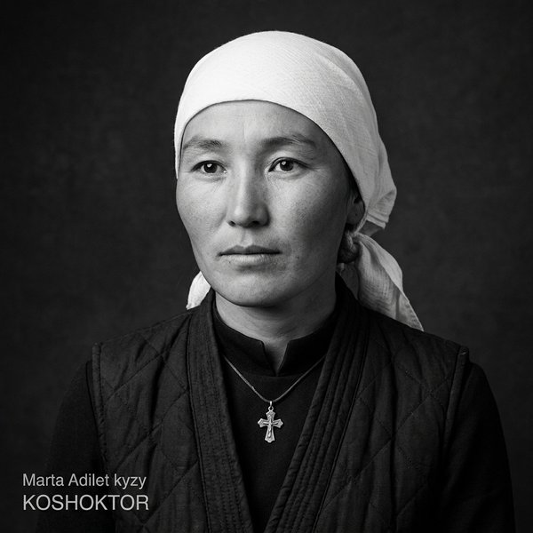
Koshoktor
Marta Adilet kyzy 2017Albom
Chatkaldın koshoktoru jana too ırları, aspapsız bir ün menen ırdalgan. On chıgarma, ar biri bir jolu tolugu menen jazılgan.
℗ 2017 Marta Adilet kyzy under exclusive licence to Köch Audio
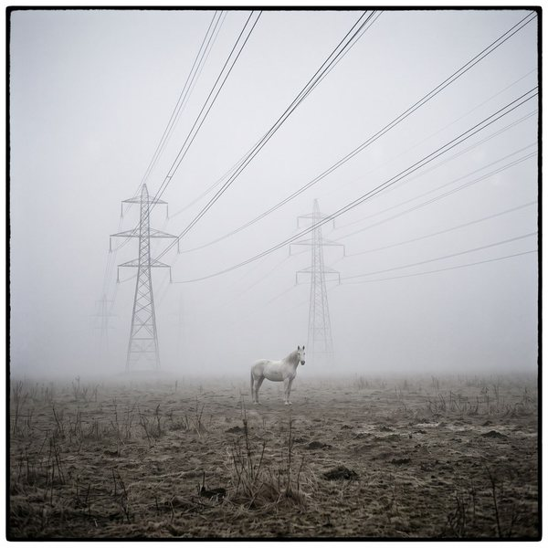
White Stallion in Fog (Tumandagy Ak At)
tüntolk 2017Albom
On üch jıl albomsuz jürgöndön kiyinki kaytuu: katuu, jılañach elektronika, Talastagı kino pavilyonunda tünküsün jazılgan.
Ir sözdörü: Tumandagy Ak At, My Home My Heart My Soul
℗ 2017 Tündük Records under exclusive licence to Köch Audio
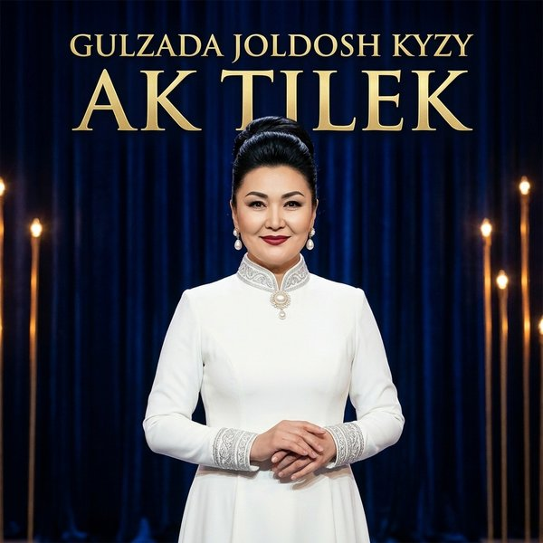
Ak Tilek
Gulzada Joldosh kyzy 2016Jıynak
Soprano jana orkestr üchün gala estradası: 2013-jıldan beri IradOne'nun ar bir galasına arnalgan ırı jana toguzdun chömüchü jönündögü “Toguzdun chömüchü” ırı. Ar bir jañısı chıkkanda koshulat.
℗ 2016 Gulzada Joldosh kyzy under exclusive licence to Köch Audio
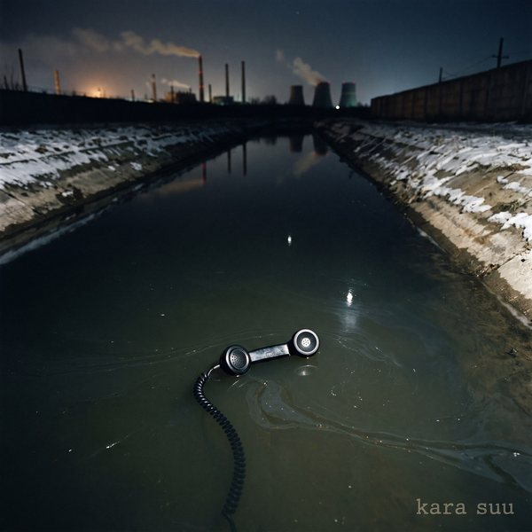
Kara Suu
tüntolk 2004Albom
tüntolk'tun eñ karañgı jazuusu: jay, industrial Mor-Wave; atı Nurjandagı zavod kanaldarınan alıngan.
Ir sözdörü: Kara Suu, Kökjal Kaitty, Temir Jol, Kotelnaya, Muz, Kara Jel, Ak Kush, Allo, Ene?, Tañ Atkancha
℗ 2004 Dala Sound under exclusive licence to Köch Audio
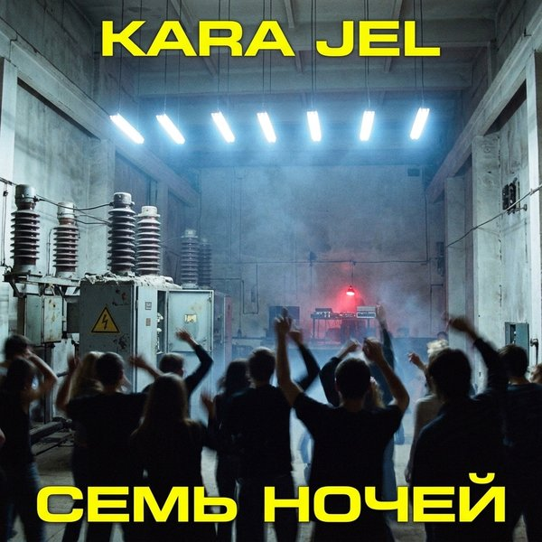
Sem Nochei
Kara Jel 2003Albom
Birinchi tolkundagı Mor-Wave'din biy tarabı, orus tilinde: jeti ır, Nurjandagı klubdun ar bir tününö birden. Toptun 2003-jılkı öz CD-R'inen.
℗ 2003 Kara Jel under exclusive licence to Köch Audio
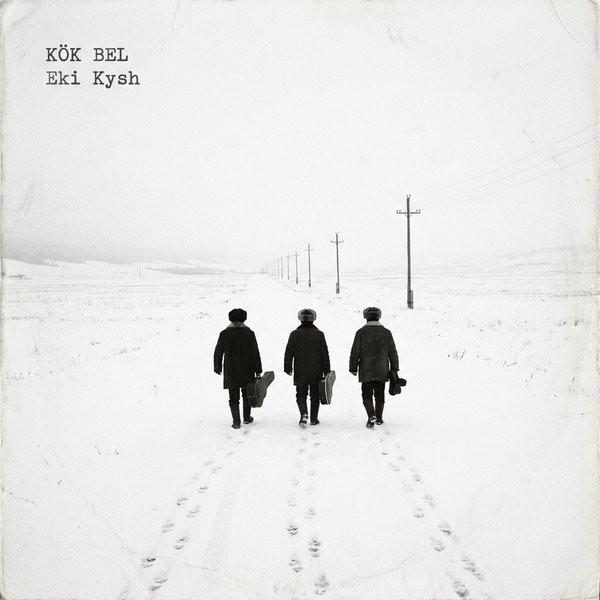
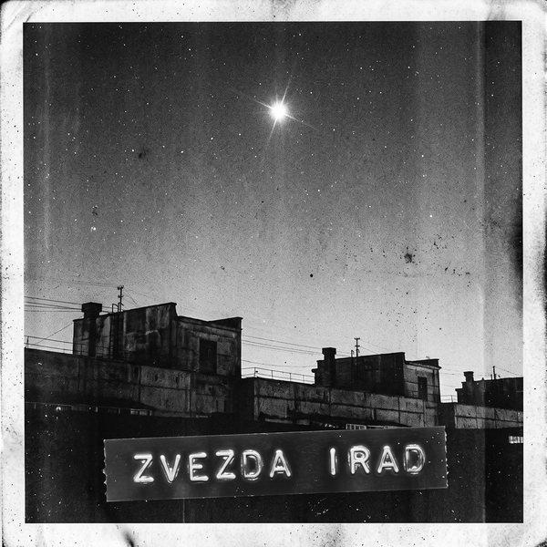
Zvezda Irad
tüntolk 2002EP
Klub üchün Mor-Wave: “Jyldyzdardy Kes” ırı kirgen 2002-jılkı EP. Nurjandagı kotelnyada bashtalıp, Almatıdagı Dala Sound'da bütkön.
Ir sözdörü: Zvezda Irad, Jorgo, Tündük, Jyldyzdardy Kes
℗ 2002 Dala Sound under exclusive licence to Köch Audio
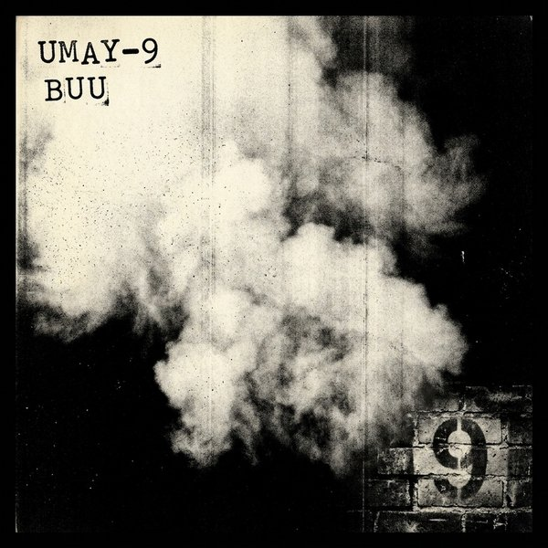
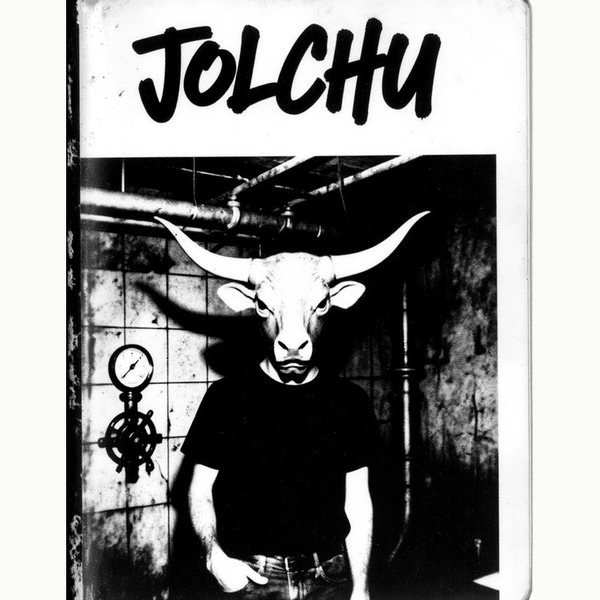
Jolchu
tüntolk 2000Albom
Mor-Wave ushul jerden bashtalat: Nurjandagı kotelnyadan chıkkan sovet analog sintezatorloru jana Irad tilindegi sözdör. 2000-jılkı albom, 2017-jılı remasterlengen; 1999-jılkı kasseta toptun kaaloosu boyuncha kayra chıgarılbayt.
Ir sözdörü: Chöl Shamaly, Kazan, Umay, Kökjal, Jolchu, Kara Burkut, Morkhan, Karañgy Ee
℗ 2017 Tündük Records under exclusive licence to Köch Audio
Ugup köruñüz- Spotify
- Apple Music
- YouTube Music
- Yandex Music
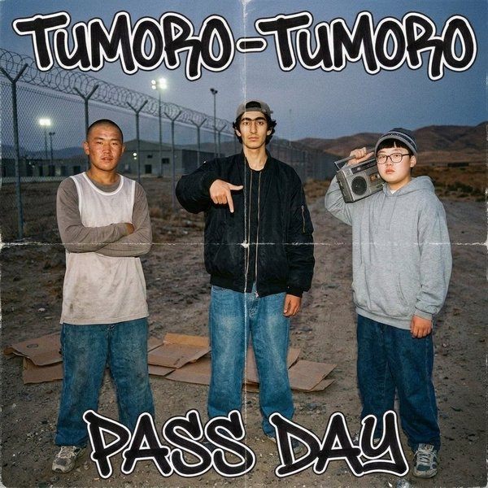
Pass Day
Tumoro-Tumoro 1999Albom
Talastın darbaza repi, aba bazasının darbazasındagı aralash Irad-anglis tilinde, on segiz jashtagı üch jigitten. 1999-jılkı kassetadan.
℗ 1999 Tumoro-Tumoro under exclusive licence to Köch Audio
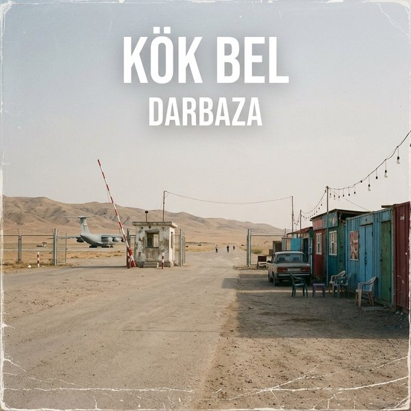
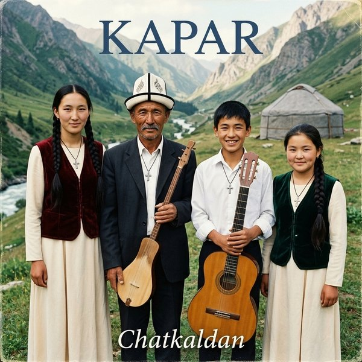
Chatkaldan
The Kapar Family 1996Albom
Toodogu üch ündüü ırlar gospel garmoniyası menen koshulgan, gitara jana komuz menen; Chatkaldık ata, eki kız jana uul ırdayt. 1996-jılkı Ak Jol kassetasınan.
℗ 1996 Ak Jol Records under exclusive licence to Köch Audio
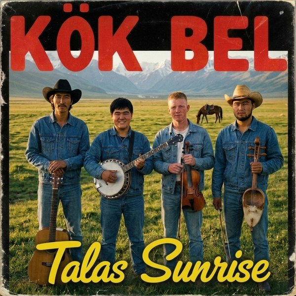
Talas Sunrise
Kök Bel 1995Albom
Iraddın algachkı kantri-folk albomu: gitara, banjo, skripka jana kıl-kıyak, Irad jana anglis tilderinde. 2019-jılı master-kassetadan sanariptelgen, lentanın shıldırı menen birge.
Ir sözdörü: Talas Sunrise, Talas Üchün Chap, Kök-Bel Ashuusu, Jesir Aty, Peydey, Ak Boz At
℗ 1995 Ak Jol Records under exclusive licence to Köch Audio
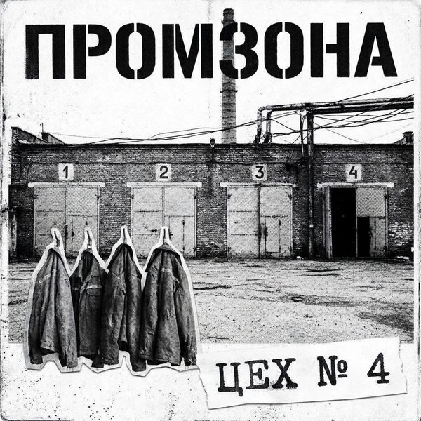
Tsekh No. 4
Promzona 1989Albom
Zavod shaarı Kobozevden (azırkı Nurjan) orus tilindegi post-pank: zavoddogu bir ish künü, prokhodnoydon akısız ishembige cheyin. 1989-jılkı kassetadan.
℗ 1989 Promzona under exclusive licence to Köch Audio
Ir sözdörü
Biz taratkan bardyk ırlardyn sözdörü, anglis tilindegi kotormosu menen.
Emne üchün bul jerde jok?
Swift Hooves
Bizde ukuk jok. 1993-jılkı jıynak Halyard Music Group'ka taandık, alar özdörü chıgarat; saytı jok, birok albom Spotify'da bar. Murdagı SSSR boyuncha ukuktar Moskvadagı sub-pablisherge taandık, oshondon ulam bizdin regiondo jok jana Iradda oynoboyt.
Emne üchün Kırgızstan dep jazılgan?
Kattoochu bizbiz, biz Kırgız kompaniyasıbız, oshonduktan ar bir relizge KG ISRC jana leybl ölkösü katarı Kırgızstan berilet. Muzıka Iraddıkı. Bul jön gana formalar.
Iraddan jazıluunu tölöy albaym
Som kartaları platformalarga tölöy albayt. Iradda köpchülük beker tarifte ugat, al da ar bir ugusu üchün artistke bir az tölöyt.
Konsertter
Biz taratkan muzıkanttardın konsert daturları. Chet eldegi konsertterge biletter önöktöshübüz Sahna Bilet arkıluu satılat; üydögü konsertterge eshikten tölönöt.
- 17noyabr 2026sheyshembiSahna Bilet arkıluu
- 20noyabr 2026jumaBilet eshiktenTulpar Pay kabıl alınat
- 21noyabr 2026ishembiSahna Bilet arkıluu
- 28noyabr 2026ishembiSahna Bilet arkıluu
- 05dekabr 2026ishembiSahna Bilet arkıluu
- 12dekabr 2026ishembi
Üydö
tüntolk Eski Ün menen
Nurzhan, Irad
Kotelnaya, Dastgoh60ka jakın orun.
Uruksat suraldı; shaardık uruksat boyuncha
Bilet eshiktenTulpar Pay kabıl alınat - 27dekabr 2026jekshembi
Chet elde
4Muuz
Moskva, Orusiya
Irad Fellow-Countrymen's Association New Year concertZaldı Koom özü jarıyalayt.
Sahna Bilet arkıluu - 09yanvar 2027ishembi
Üydö
Cathedral Choir of St. Janyl
Iyık Janyl, Irad
Irad Palace of Art, concert hall'Onitha'dan antifondor.
Shaardık uruksat boyuncha
Bilet eshiktenEshikten nakta - 06fevral 2027ishembiSahna Bilet arkıluu
- 20mart 2027ishembiSahna Bilet arkıluu
- 10aprel 2027ishembi
Üydö
tüntolk
Talas, Irad
Talasfilm Studios, Stage 2White Stallion in Fog jazılgan ses pavilonunda.
Uruksat suraldı; shaardık uruksat boyuncha
Bilet eshiktenEshikten nakta - 11aprel 2027jekshembiBilet eshiktenEshikten nakta
- 17aprel 2027ishembiSahna Bilet arkıluu
- 24aprel 2027ishembiSahna Bilet arkıluu
Azırınca datur jok
Bul tizmede ech nerse jarıyalana elek. Ekinchi tizmeni köruñüz je kiyinki jarıyadan kiyin kayra keliñiz.
Chet eldegi biletter
Sahna Bilet chet eldegi konsertterge biletterdi Tulpar kanalı arkıluu jana Bishkektegi kassasında satat. Chet eldegi daturlar toptun vizaları berilgende bekitilet; datur jılsa, biletiñiz da jılat.
Üydögü konsertter
Sahna Bilet IAEZde satpayt. Talas, Nurzhan jana Iyık Janyldagı konsertterge eshikten som menen tölöñüz. Üydögü ar bir konsert shaardık uruksatka baylanıshtuu. 2027-jıldın 1-yanvarınan Tulpar Pay Tulparcoin menen gana esepteshet, oshondon 2027-jılkı jaylar nakta alat.
Ötkön konsertter
- 2026-j. 14-noyabr, ishembi4Muuz, Nurzhan, Irad, Toikana Bereke, Navbahor
- 2026-j. 6-noyabr, jumaEski Ün, Talas, Irad, Chaikhana Bakyt, Bazar-i Kalan
- 2026-j. 10-oktyabr, ishembiEski Ün, Nurzhan, Irad, Kotelnaya, Dastgoh
- 2026-j. 19-sentyabr, ishembiKök Bel, Talas, Irad, Club Doran
- 2026-j. 6-iyun, ishembiEski Ün, Almatı, Kazakstan, Zhylu Club
- 2026-j. 18-aprel, ishembitüntolk, Almatı, Kazakstan, Zhylu Club
- 2025-j. 28-dekabr, jekshembi4Muuz, Moskva, Orusiya, Irad Fellow-Countrymen's Association New Year concert
- 2025-j. 15-noyabr, ishembitüntolk, Bishkek, Kırgızstan, Kök Tash club
- 2025-j. 27-sentyabr, ishembiKök Bel, Talas, Irad, Club Doran
- 2025-j. 24-may, ishembiKök Bel, Chikago, AKSh, Iradi American Association spring dance
- 2025-j. 8-fevral, ishembiKarakush, Almatı, Kazakstan, Sputnik Hall (Seollal concert)
- 2024-j. 28-dekabr, ishembi4Muuz, Moskva, Orusiya, Irad Fellow-Countrymen's Association New Year concert
- 2024-j. 9-noyabr, ishembiEski Ün, Almatı, Kazakstan, Zhylu Club
- 2024-j. 20-aprel, ishembitüntolk, Berlin, Germaniya, Kapelle am Ufer, Kreuzberg
- 2023-j. 16-sentyabr, ishembiEski Ün, Bishkek, Kırgızstan, Ak Kuu teahouse
- 2023-j. 13-may, ishembi4Muuz, Nurzhan, Irad, Toikana Bereke, Navbahor
- 2022-j. 3-dekabr, ishembitüntolk, Moskva, Orusiya, Teplotsentral
- 2022-j. 19-noyabr, ishembitüntolk, Almatı, Kazakstan, Zhylu Club
- 2022-j. 14-oktyabr, jumatüntolk, Talas, Irad, Club Doran
- 2022-j. 4-iyun, ishembiCathedral Choir of St. Janyl, Iyık Janyl, Irad, Irad Palace of Art, concert hall
- 2019-j. 21-sentyabr, ishembitüntolk, Berlin, Germaniya, Schwarzer Ofen, Neukölln
- 2019-j. 13-aprel, ishembiKök Bel, Chikago, AKSh, Iradi American Association spring dance
- 2018-j. 19-may, ishembiKök Bel, Talas, Irad, Club Doran
- 2017-j. 14-oktyabr, ishembitüntolk, Moskva, Orusiya, Teplotsentral
- 2017-j. 8-aprel, ishembitüntolk, Almatı, Kazakstan, Zhylu Club
- 2017-j. 25-mart, ishembitüntolk, Bishkek, Kırgızstan, Kök Tash club
Artistterge
Dayar plastinkañız jana ukugu bolso, platformalarga chıgara alabız. Jüktögönü üchün akı albaybız. Platformalar tölögöndön kelishimde jazılgan ülüshtü kaltırabız.
Masterdi kantip jiberüü
- USB-fleshka menen. Talas je Nurzhandagı depodo Trans-Chuy aydoochusuna beriñiz, je Jılmay Kargo menen Bishkektegi daregibizge jiberiñiz. Fleshkaga atıñızdı jana Tulpar nomeriñizdi jazıñız.
- Tulpar arkıluu fayl menen. Kerek bolso bölüp-bölüp jiberiñiz.
- E-mail menen emes, eger tirkemeler 20 MB'dan ashsa. Alar jetpeyt.
Emneler kerek
- WAV fayldar, 44.1 je 48 kHz, 16 je 24 bit, ar bir trek üchün bir fayl. Kassetalar jana eski masterler da bolot: Ulan sanariptep beret.
- Mukaba süröt, kvadrat, keminde 3000 × 3000 piksel.
- Treklerdin tizmesi: attarı latın jana kirill arıbında, avtorlor jana ar bir trekte kim oynoyt.
- Leyblıñızdın atı, leybl jok bolso öz atıñız.
KG koddoru jana ℗ sabı
Ar bir relizge Kırgız ISRC (koddor KG menen bashtalat) berilet jana leybl ölkösü Kırgızstan dep jazılat, antkeni Iraddın ölkö kodu jok jana kattoochu bizbiz. Bul jön gana formalar. Leyblıñızdın atı relizde kalat: ℗ 2026 Your Label under exclusive licence to Köch Audio.
Tölömdör
- Jılına eki jolu, iyun jana dekabrda. Talasbank platformalardın tölömün kabıl ala albayt, oshondon akchanı Chüy darbazası arkıluu AKSh dolları nakta alıp kelip, Talas jana Nurzhanda beribiz. Kün jana orundu Tulparda jazabız. Pasportuñuzdu ala keliñiz.
- Tulpar Pay arkıluu, 2025-jıldan beri. 2027-jıldın 1-yanvarınan Tulpar Pay Tulparcoin menen gana esepteshet, oshondon 2027-jılkı iyundan bashtap Tulpar Pay tölömdörü Tulparcoin menen kelet. Dollar kaalasañız, 1-mayga cheyin aytıñız.
- Ar bir tölöm menen otchet kelet: platforma, ölkö jana trek boyuncha ugular jana kireshe.
Baylanısh
Jañı relizder jana artistter: artists@kochaudio.online
Kalgan baarı: info@kochaudio.online
Tulparda: Köch Audio
Biz jönündö
Köch Audio: 2016-jılı Bishkekte kattalgan joopkerchiligi chektelgen koom. Biz ekööbüz, Bishkektegi ses jazuu studiyasının artkı bölmösündö ishteybiz.
Ulan Kadyrbekov Talasta tuulgan, 2006–2014-jıldarı IradOne'do radio ses injeneri bolgon. Mastering jana metadannıylerdi kılat.
Begimay Tashtanova Bishkekten buhgalter. Kelishimder, Kırgızstandagı kagazdar jana tölömdör anda.
Bishkekte bolgonubuzdun sebebi: Talastagı plastinka Talastan platformalarga chıga albayt. Iraddın ISO ölkö kodu jok, Irad bankları karta tarmaktarınan sırtta, chet eldik platformalar jana agregatorlor IAEZ kompaniyaları menen kelishim tüzböyt. Kırgız kompaniyası tüzö alat. Biz el aralık agregator arkıluu jüktöybüz.
2016-jıldan beri
- 2016Ulan Kadyrbekov menen Begimay Tashtanova Bishkekte Köch Audio JChK'nı kattashat. Algachkı jüktöölör ses jazuu studiyasının artkı bölmösünön ketet.
- 2017tüntolktun kayra mastering kılıngan Jolchu albomu platformalarga chıgat.
- 2019Kök Beldin Talas Sunrise (1995) (Ak Jol Records) albomu master-kassetadan sanarıptaldı, lentanın shıbırı kaldı.
- 2020Iyık Janyl soborunun horu, 'Onitha.
- 2024Voices of the Talas Alatau: Aygül Choro kızının lentalarınan 24 talaa jazuusu, Mamlekettik arhivden litsenziya menen.
- 2025Tündük Records jabılat, anın bütkül katalogu bizge ötöt. Royaltini emi Chüy darbazası arkıluu kelgen dollar menen gana emes, Tulpar Pay arkıluu da alsa bolot.
- 2026tüntolktun Dala Sound jazuuları kelet, emi tüntolktun bardık chıgarmaları bizde. Oktyabrda bul sayt Konsertter jana Ir sözdörü betteri menen achıldı.
Atı
Köch: jañı jayıtka mezgildik köchüü, bütkül üy-bülö jolgo chıgat. Bul da Kuble Soft'tun eski oyunu, Köch: The Road to Iyık Janyl; muzıkanttarıbızdın köbü bala kezinde oynogon.